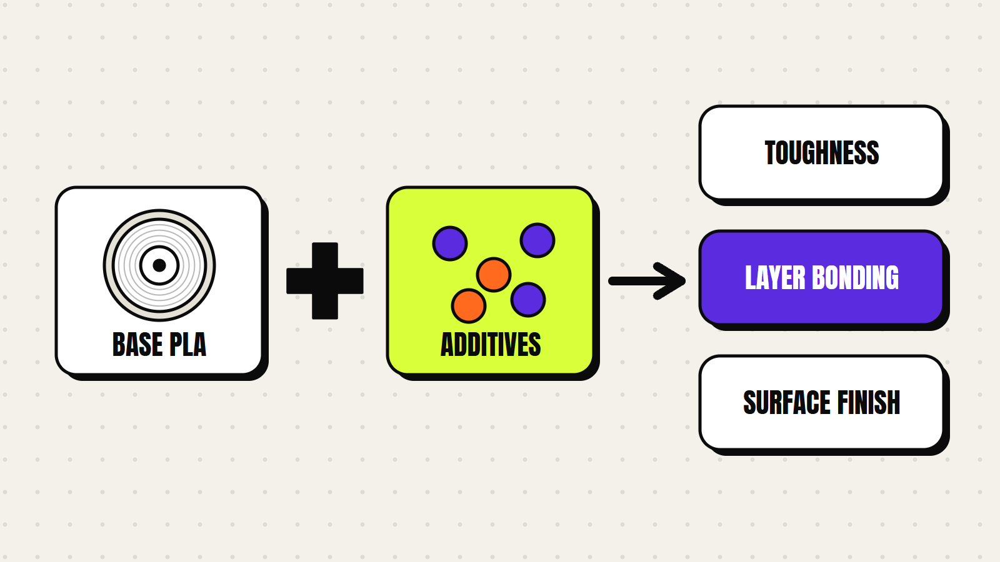
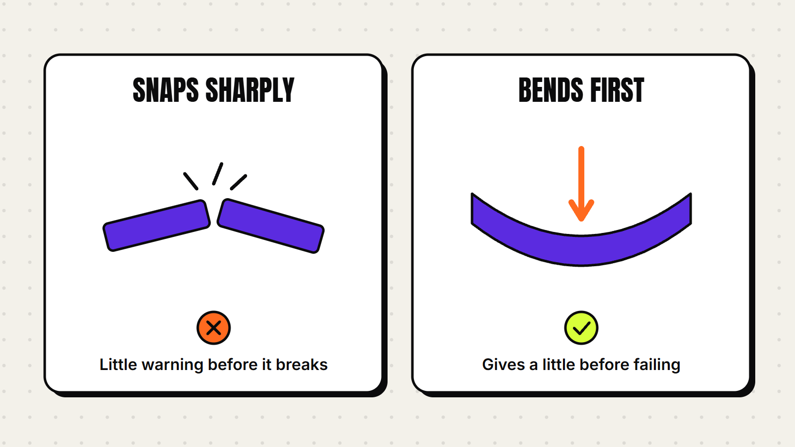

Look at a shelf of filament spools and you will see PLA beside PLA+, sometimes at different prices. The plus sounds like an upgrade, and often it is, but not in a single fixed way. There is no shared standard for what PLA+ contains. This guide explains what the label usually means, where it helps, and how to decide which one your part needs.
PLA, short for polylactic acid, is a plastic usually made from plant sources such as corn starch or sugar cane. It prints at moderate temperatures, warps very little, holds sharp detail, and comes in a wide range of colours. Those qualities make it the most popular desktop filament.
Its weak points are well known too. Plain PLA is stiff but can be brittle under sudden impact, and it starts to soften at roughly 55 to 60 °C, which a hot car or a sunny window can reach.
Manufacturers blend extra ingredients into PLA to change how it behaves. Depending on the brand, the aim might be:
Because every maker uses its own recipe, two spools both labelled PLA+ can behave quite differently. Some brands use other names, such as tough PLA, for a similar idea.

A tougher blend is useful when a part is handled often or takes small bumps: desk organisers, phone stands, display racks, wall holders for light items, and gifts that will travel. Where plain PLA might chip or crack, a good PLA+ may give a little first.
For a vase, a figurine, a model, or an early prototype that will sit on a shelf, plain PLA does the job well. It often prints very crisp detail and offers special finishes such as matte, silk, and gradient colours.
| Property | Plain PLA | Typical PLA+ |
|---|---|---|
| Ease of printing | Very good | Very good, sometimes a little hotter |
| Impact resistance | Lower | Usually better |
| Stiffness | High | High, sometimes slightly less |
| Heat resistance | Low | Usually low, depends on blend |
| Colours and effects | Widest range | Good range |
| Consistency between brands | Fairly consistent | Varies a lot |
If a part matters, test the actual filament instead of trusting a name. Print two small bars or hooks with the same settings, one in each material. Bend them by hand, drop them from table height, and load them gently until one fails. Look at where and how each breaks. A clean snap between layers points to bonding. A break across the layers suggests the material itself reached its limit.

Check the maker's data sheet for the recommended nozzle and bed temperatures and any figures on strength or heat. Compare figures only when they were measured the same way. Keep in mind that test values come from ideal samples, while your part has its own shape and layer direction.
PLA of either kind absorbs moisture slowly. Wet filament prints roughly and breaks more easily. In humid months, seal spools with desiccant. Our guide to storing filament during the monsoon shows how.
Tip: When you ask for a part, describe the use rather than naming a grade. "It clips onto a bag and gets knocked about" helps more than "print it in PLA+".
When in doubt, ask which exact filament will be used and why. A short, honest answer is more useful than a label.
It often costs a little more per spool, though prices vary widely between brands. For a small part the difference in material is usually modest compared with design, printing, and finishing work.
Many blends print slightly hotter than plain PLA. The spool label gives a temperature range, and a short test print confirms the best value for a particular machine.
Usually yes, in the same way as PLA, but additives differ. Test paint or adhesive on a scrap piece before using it on the finished part.
Suppose you want a phone stand and a shelf figurine. The stand is picked up, nudged, and sometimes knocked off the desk, so a tougher PLA blend with thick walls is a sensible choice. The figurine only has to look good, so plain PLA in a matte or silk finish may suit it better. Neither belongs in a parked car.
Choose plain PLA for looks, detail, and shelf pieces. Choose a trusted PLA+ for everyday objects that take small knocks. Move to PETG or ASA when warmth, moisture, or sunlight come into it. Compare them in our filament guide, see the PLA material page, or request a quote and tell us how the part will be used.